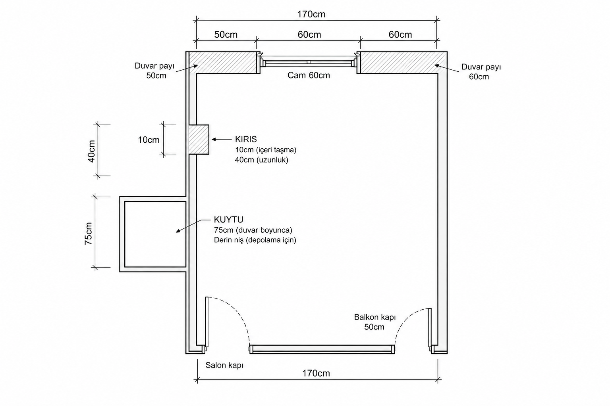
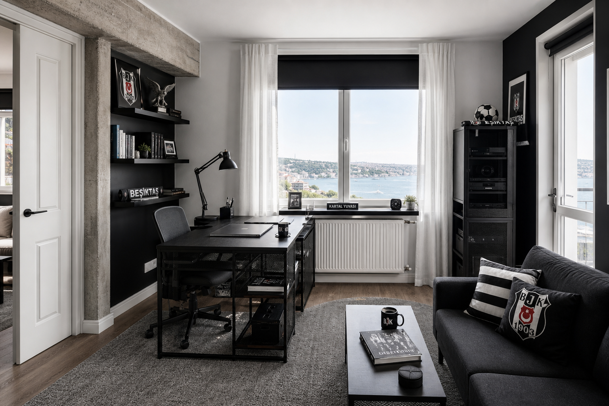
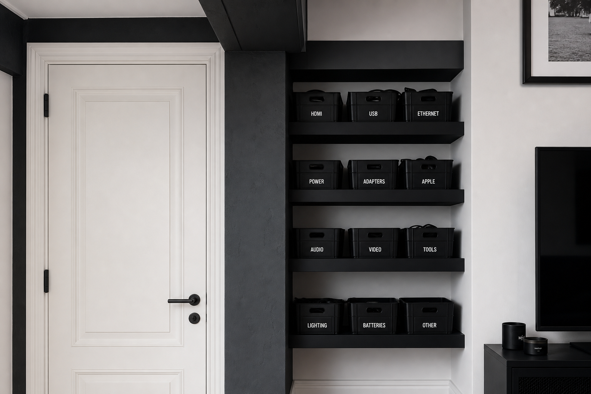
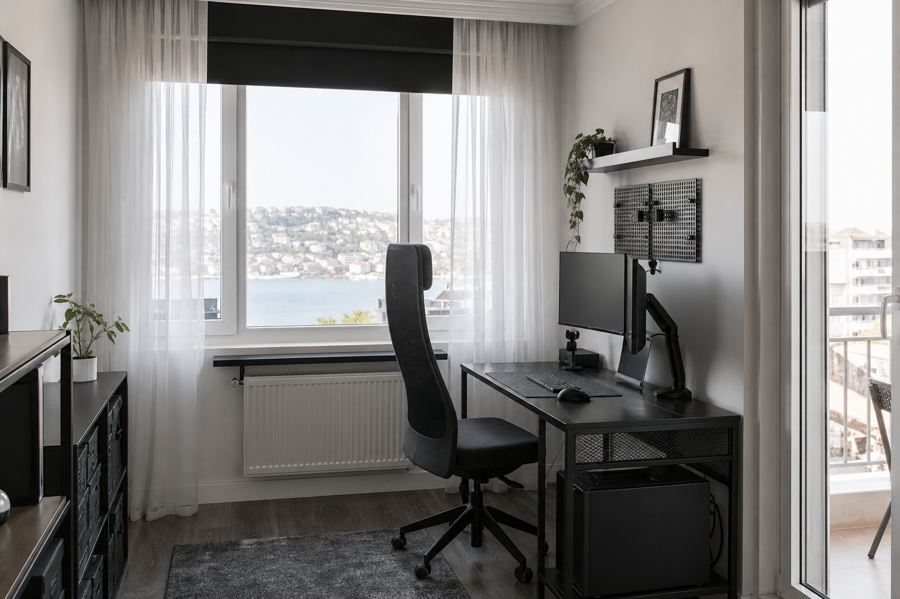

Salon + Balkon
İki kapı aynı duvarda, köşelerde. İkisi de odaya açılır. Ortadaki geçiş bandı mobilyasız kalır.
Elindeki krokiye kilitli · Beşiktaş 1903
Alt duvarda salon + balkon kapısı, karşıda cam, solda kiriş ve kuytu. Sığ “10 cm girinti” yorumu iptal.
İki kapı aynı duvarda (alt). Cam karşıda. Sol duvarda kiriş çıkıntısı + içeri kuytu. Balkon kapısı köşe bitiminde; hat sağa dönüp devam eder.

Kroki yönleri sabit; cm’ler bu duvarlara yapıştırıldı.
İki kapı aynı duvarda, köşelerde. İkisi de odaya açılır. Ortadaki geçiş bandı mobilyasız kalır.
Kiriş: 40 cm hat, odaya 10 cm. Kuytu: 75 cm boyunca içeri gömülü niş — kablo/kutu/raf buraya. Sığ 10 cm raf modeli yanlıştı.
Karşı duvar. Masa camı kapatmaz; petek üstü ince raf.
110 cm sonra balkon köşede biter. Devam sağa/alta döner: 170 cm düz — ana mobilya bandı.
Kapı salınımları altta; kuytu depo; cam ışık; sağ/dönüş duvarı mobilya.
Derin niş: etiketli kasalar, kablo, yazıcı. Derinlik ~40–60 cm ise IKEA dar ünite / özel raf; ölçü kesinleşince BESTÅ veya özel gömme.
FJÄLLBO 100×36 veya 140×70 ofset. Petek önü boş. Alt kapılara sırt dönük çalışma.
120 cm BESTÅ veya ≤160 cm kanepe. Alt kapı geçişini kesme.
Salon ↔ balkon aksı açık. Ayakkabı/sepet kapı salınımı dışına.



Kuytu derinliği netleşince depo kesinleşir; şimdilik dar/modüler seçenekler.
Cam duvarına ve dar ene uygun. Kod: 303.397.35
ikea.com.tr →Alt kapı geçişini kesmeyecek şekilde. 702.611.50
ikea.com.tr →Sağ duvar veya 170 cm dönüş bandına. Kuytu derinliği 42+ cm ise kuytuya da aday. 590.594.61
ikea.com.tr →Kuytu ~39 cm+ derinse buraya; değilse sağ duvara. 202.758.85
ikea.com.tr →Kuytu derinliğini ölç → ona göre 35–55 cm raf sistemi.
trendyol.com →Sağ duvar / dönüş bandı. Alt kapı ortasını kapatma.
vivense.com →Çizim oturdu; iki sayı planı kilitler.